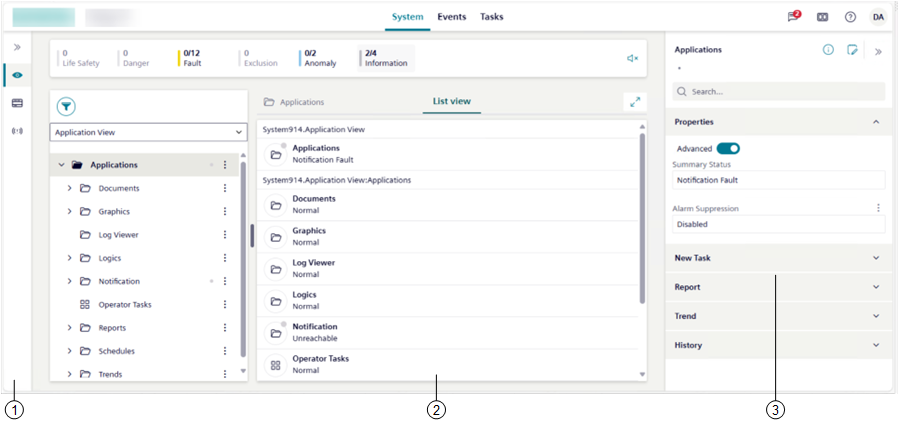

System Workspace
When you select System in the horizontal navigation bar, the system monitoring workspace displays below the Summary bar.

1 | In the vertical navigation bar on the left, by selecting or directly selecting an icon, you can choose between different views. Default selection is Hierarchies. |
2 | By default, the workspace is arranged as follows:
By clicking the button on the splitters, can you can expand/collapse panes. To handle layouts (change layout, lock layout, and so on), see Adjust Layout. For more details about layout types, see the table below. Investigative treatment is also available on top of System workspace. For instructions, see Handling an Event with Investigative Treatment. |
3 | By default, the right panel is collapsed. If you select an object in the System tree:
Regardless of the object selection in the System tree, from the horizontal navigation bar, you can access additional features, among which some can display in the right panel. |
The available layouts vary depending on the browser window size or the device screen resolution (see the following table for reference).
System Workspace Layouts | |||
|---|---|---|---|
Layout1) | Workspace | Screen size | Minimum width |
| List view or tree view | 4.7” (standard smartphone devices; see Mobile Flex) | 360 pixels |
single pane | Primary pane (Depending on the project configuration, one or more of the following: List view, Graphics, and so on.) | 9.7” (standard mobile devices in landscape orientation) | 577 pixels |
2-pane | Selection (System tree) pane Primary pane | ||
3-pane | Selection (System tree) pane Primary pane Comparison2) pane (opens alongside the Primary pane.) | 14’’ or higher (large monitors) | 1360 pixels |
1) | The current layout is highlighted in a different color. |
2) | When the browser window size is reduced or the screen resolution is less than 1360 pixels, it is not possible to display the Comparison pane. |